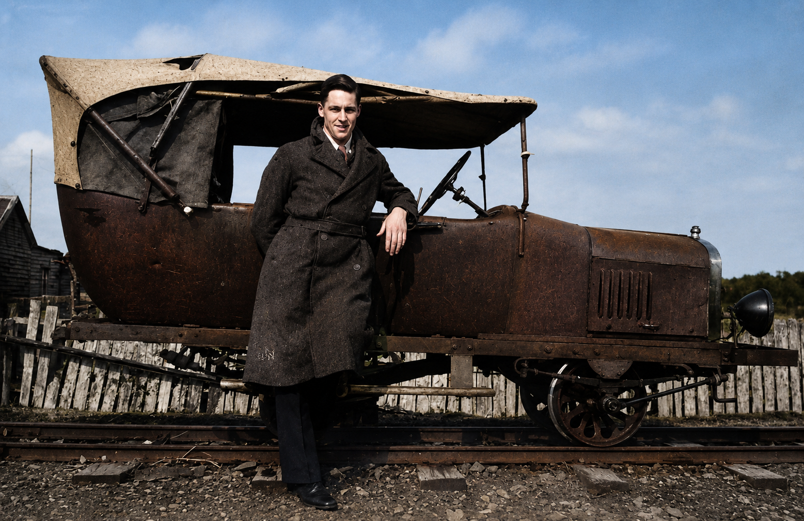

A vehicle to identify
One railcar—or a changing one?
Reports suggest that Magnet had one railcar. Yet these photographs, however, show markedly different bodywork: one appears open-sided beneath a canvas canopy, while the other has an enclosed windscreen and a different bonnet and front treatment.


What the images may suggest
A question still open.
The differences may indicate that a single vehicle was substantially modified during its working life. Or were there actually two in service? Was one privately owned?
Sometimes old photographs raise more questions than they answer.